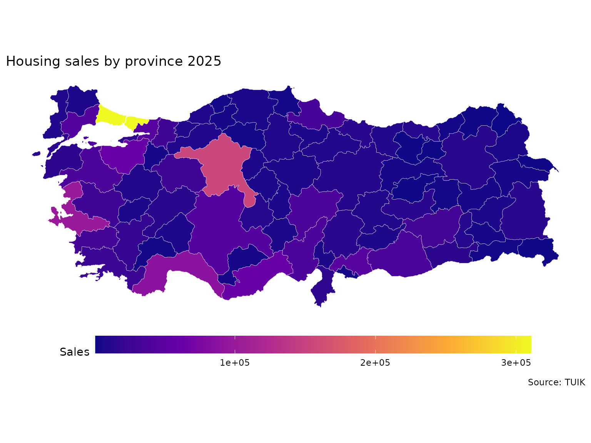

Downloading and Plotting Maps with tuikr
Source:vignettes/geographic-mapping.Rmd
geographic-mapping.RmdIntroduction
tuikr returns both the indicator values and the matching
geometries needed for a map. A typical workflow is:
- discover a geographic variable with
tuikr::geo_data() - confirm the available NUTS levels in
var_levels - download the values for one level
- join them to
tuikr::geo_map() - plot the result
Find a Geographic Series
Start in metadata mode and locate the housing-sales series used below.
geo_variable_catalog <- tuikr::geo_data()
geo_variable_catalog_tr <- tuikr::geo_data(lang = "tr")
housing_sales_series <- geo_variable_catalog |>
dplyr::filter(var_num == "INS-GK055-O006")
housing_sales_series |>
dplyr::select(
var_name,
var_num,
var_levels,
var_period
)
#> # A tibble: 1 × 4
#> var_name var_num var_levels var_period
#> <chr> <chr> <list> <chr>
#> 1 Number of house sales (total) INS-GK055-O006 <int [1]> yillik
geo_variable_catalog_tr |>
dplyr::filter(var_num == "INS-GK055-O006") |>
dplyr::select(var_name, var_num)
#> # A tibble: 1 × 2
#> var_name var_num
#> <chr> <chr>
#> 1 Konut satış sayıları (toplam) INS-GK055-O006Use lang = "tr" to get Turkish indicator names in the
metadata table and in the downloaded value column.
var_levels is a list-column. Pull the first element to
inspect the levels available for this series. Use var_level
only when a series is published at more than one level.
housing_sales_series$var_levels[[1]]
#> [1] 3Download the Values
INS-GK055-O006 is published at level 3, which is the
provincial map.
housing_sales <- tuikr::geo_data(
var_num = "INS-GK055-O006",
var_level = 3
) |>
dplyr::mutate(
date = as.integer(date),
number_of_house_sales_total = as.numeric(number_of_house_sales_total)
)
housing_sales |>
dplyr::slice_head(n = 8)
#> # A tibble: 8 × 3
#> code date number_of_house_sales_total
#> <chr> <int> <dbl>
#> 1 66 2025 7732
#> 2 66 2024 7238
#> 3 66 2023 6483
#> 4 66 2022 7504
#> 5 66 2021 6238
#> 6 53 2025 3668
#> 7 53 2024 3569
#> 8 53 2023 3459Download the Boundaries
tuikr::geo_map(3) returns an sf object that
is already keyed by the code column used in
tuikr::geo_data().
province_boundaries <- tuikr::geo_map(3)
province_boundaries |>
dplyr::select(code, ad) |>
dplyr::slice_head(n = 6)
#> Simple feature collection with 6 features and 2 fields
#> Geometry type: MULTIPOLYGON
#> Dimension: XY
#> Bounding box: xmin: 27 ymin: 36.0798 xmax: 39.2599 ymax: 39.27
#> Geodetic CRS: WGS 84
#> # A tibble: 6 × 3
#> code ad geometry
#> <chr> <chr> <MULTIPOLYGON [°]>
#> 1 9 AYDIN (((28.2497 37.5499, 28.2295 37.5204, 28.2204 37…
#> 2 1 ADANA (((36.18 37.7096, 36.1898 37.7, 36.1397 37.7, 3…
#> 3 2 ADIYAMAN (((38.9199 37.8197, 38.9498 37.7999, 38.9602 37…
#> 4 3 AFYONKARAHİSAR (((30.6098 38.2199, 30.55 38.1601, 30.5201 38.1…
#> 5 7 ANTALYA (((32.1898 36.9604, 32.2399 36.9198, 32.2496 36…
#> 6 20 DENİZLİ (((28.76 37.2496, 28.7295 37.2698, 28.7295 37.3…If you only want the attribute table, call
tuikr::geo_map(level = 3, dataframe = TRUE).
Join and Plot
Filter to the latest available year, join on code, and
plot the result.
latest_year <- max(housing_sales$date, na.rm = TRUE)
housing_sales_latest <- housing_sales |>
dplyr::filter(date == latest_year)
housing_sales_map <- province_boundaries |>
dplyr::left_join(housing_sales_latest, by = "code")
ggplot2::ggplot(housing_sales_map) +
ggplot2::geom_sf(
ggplot2::aes(fill = number_of_house_sales_total),
color = "white",
linewidth = 0.1
) +
ggplot2::coord_sf(datum = NA) +
ggplot2::scale_fill_viridis_c(option = "plasma", na.value = "grey90") +
ggplot2::theme_minimal() +
ggplot2::theme(
legend.position = "bottom",
legend.key.width = grid::unit(3, "cm")
) +
ggplot2::labs(
title = paste("Housing sales by province", latest_year),
fill = "Sales",
caption = "Source: TUIK"
)
Troubleshooting
If a request fails, go back to the metadata table and inspect
var_levels before changing var_level. Many
indicators are not available at every geographic level.
If the join produces missing fills, inspect the boundary keys with
sf::st_drop_geometry(province_boundaries) or call
tuikr::geo_map(level = 3, dataframe = TRUE) to compare
codes directly.
If you need a different geometry type, remember that levels 2, 3, and 4 return polygon boundaries while level 9 returns settlement points.